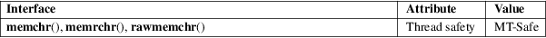

memchr, memrchr, rawmemchr − scan memory for a character
Standard C library (libc, −lc)
#include <string.h>
void
*memchr(const void s[.n],
int c, size_t n);
void *memrchr(const void s[.n],
int c, size_t n);
[[deprecated]] void *rawmemchr(const void s[.n], int c);
Feature Test Macro Requirements for glibc (see feature_test_macros(7)):
memrchr(),
rawmemchr():
_GNU_SOURCE
The memchr() function scans the initial n bytes of the memory area pointed to by s for the first instance of c. Both c and the bytes of the memory area pointed to by s are interpreted as unsigned char.
The memrchr() function is like the memchr() function, except that it searches backward from the end of the n bytes pointed to by s instead of forward from the beginning.
The rawmemchr() function is similar to memchr(), but it assumes (i.e., the programmer knows for certain) that an instance of c lies somewhere in the memory area starting at the location pointed to by s. If an instance of c is not found, the behavior is undefined. Use either strlen(3) or memchr(3) instead.
The memchr() and memrchr() functions return a pointer to the matching byte or NULL if the character does not occur in the given memory area.
The rawmemchr() function returns a pointer to the matching byte.
For an explanation of the terms used in this section, see attributes(7).

memchr()
C11, POSIX.1-2008.
memrchr()
rawmemchr()
GNU.
memchr()
POSIX.1-2001, C89, SVr4, 4.3BSD.
memrchr()
glibc 2.2.
rawmemchr()
glibc 2.1.
bstring(3), ffs(3), memmem(3), strchr(3), strpbrk(3), strrchr(3), strsep(3), strspn(3), strstr(3), wmemchr(3)